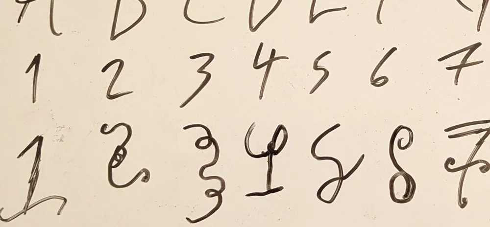

Inrikes

Svenska akademien föreslår att lägga till versaler till siffror
Svenska Akademien publicerade under onsdagen innan långhelgen sin årliga rapport på svenska språkets förbättringsområden. I undersökningen framförs ett förslag som, enligt rapportens förord, skulle kunna revolutionera det svenska språket på ett sätt inte skådat sedan tillägget av å, ä och ö – nämligen att lägga till versaler till siffror!
Inledningsvis ser många personer fördelarna i ett sådant här utvidgande av det svenska språket. "Vem har inte suttit där, i början av en mening, och undrat hur de ska skriva stora tre", säger Amanda Krister, som är en av de fyra författarna till rapporten, i en intervju med Löken. Det nya räknesystemet skulle ändra en enkel uppräkning från 1, 2, 3, 4… till 1, stora 1, 2, stora 2, 3, stora 3 och så vidare, och systemet skulle också ändra hörnstenarna av hur matematik fungerar. Med detta i åtanke är det kanske inte konstigt att den publicerade undersökningen minst sagt har skapat uppror i både bokstav- och sifferetablisemanget, med många arga debattartiklar. Rapporten föreslår ett omskrivande av grammatiska regler i grunden, vilket Krister också erkänner kan bli ett problem i ett så etablerat språk som svenskan.
Men trots optimism hos vissa, ser andra den potentiella förändringen som någonting negativt. Bland skeptikerna finns Samanta Berggren som snart går ut gymnasiet med en utbildning i teknisk design. Berggren påstår att det redan är svårt att hålla koll på alla nummer och siffror: "Det finns så många, jag menar vi har tretton, fjorton, sju, fem, hundra, elva och minst några till". Berggren fortsätter att det svenska språket länge har agerat som en typ av fristad för akademiker när det gäller språk, med säkra och trofasta regler, men att det här nu skulle kunna skrämma iväg språklärare. I respons svarar Svenska akademien att det nya nummersystemet bara är till för att göra språket mer begripligt. Allting är fortfarande väldigt teoretiskt och om förslaget kommer att tas på allvar är svårt att avgöra i nuläget, avslutar Krister.